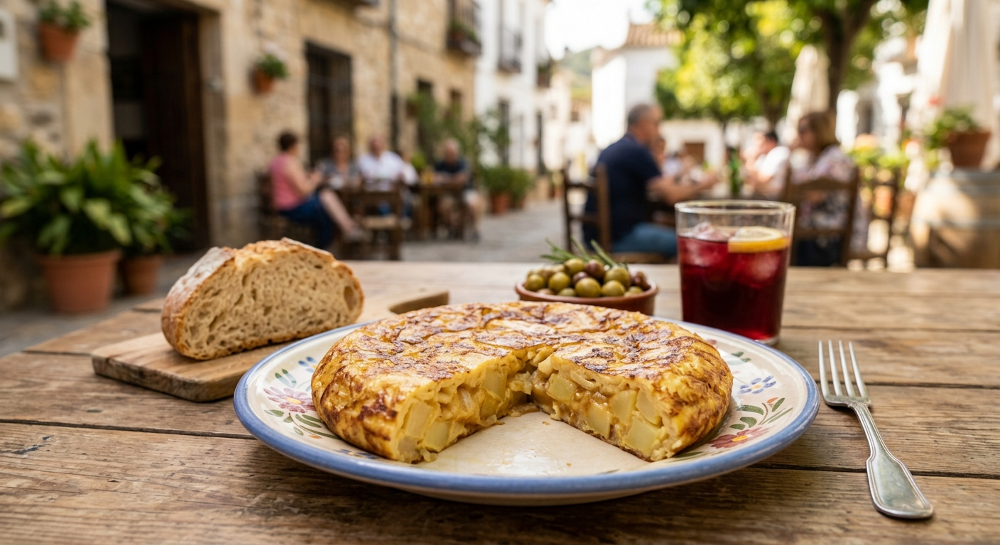

Ingredientes
- 4 patatas medianas
- 5 huevos
- 1 cebolla
- Aceite de oliva
- Sal
Pasos de preparación
- Pelar y cortar las patatas en láminas finas.
- Freír las patatas y la cebolla en aceite hasta que estén tiernas.
- Batir los huevos y mezclar con las patatas escurridas.
- Cuajar la mezcla en una sartén con poco aceite.
- Dar la vuelta a la tortilla y cocinar por el otro lado.